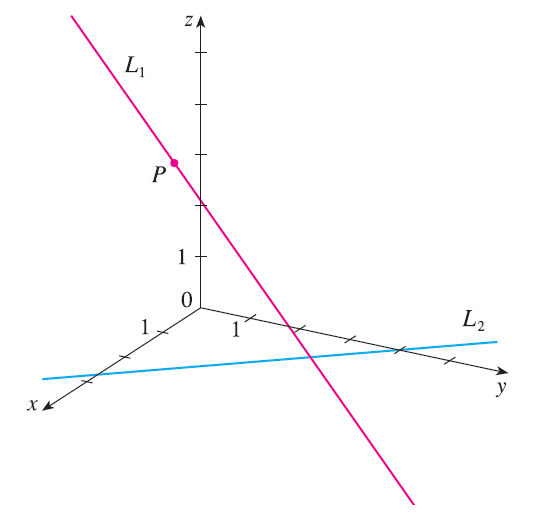

The figure shows a line \(L_1\) in space and a second line \(L_2\), which is the projection of \(L_1\) onto the xy-plane. (In other words, the points on \(L_2\) are directly beneath, or above, the points on \(L_1\).) (a) Find the coordinates of the point P on the line \(L_1\). (b) Locate on the diagram the points A, B, and C, where the line \(L_1\) intersects the xy-plane, the yz-plane, and the xz-plane, respectively.
